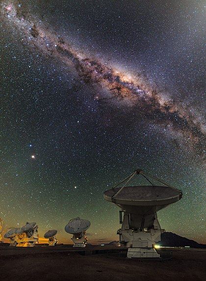

A Origem da Astronomia
Astronomia é a ciência que estuda o Universo, desde a sua origem e formação aos astros que o compõe e os fenômenos que nele ocorrem. Originou-se a partir da observação dos astros e de seu efeito no cotidiano do ser humano, que desde a pré-história vem utilizando o conhecimento astronômico acumulado durante o tempo para desenvolver as atividades humanas.
Na Grécia Antiga, diversos estudiosos realizaram pesquisas e formularam teorias sobre o Universo, algumas delas foram contestadas e outras são aceitas até hoje como, por exemplo, a teoria da esfericidade da Terra, de Pitágoras; o ano com duração de 365 dias e 6 horas, proposto por Eudóxio de Cnido; as explicações de Aristóteles para as fases da lua e os eclipses solar e lunar.Com o passar do tempo a astronomia se afastou do senso comum e das religiões, desenvolvendo-se a partir da incorporação de novos conhecimentos obtidos a partir da interação com outras ciências, como por exemplo a Física, a Química a Biologia, a Geografia e das novas tecnologias, que passaram a ter um papel fundamental na observação dos astros e nas investigações dos fenômenos astronômicos.
Hoje essa ciência está dividida em vários ramos (Astrofísica, Cosmologia, Astrobiologia, Planetologia etc), e ainda influencia muitas outras ciências, uma vez que o interesse pelo espaço não está restrito à Astronomia e a resposta de muitas perguntas nas demais ciências depende do conhecimento do espaço. Além disso, com o desenvolvimento das novas tecnologias, essa ciência se tornou informatizada, possuindo telescópios capazes de fotografar milhares de estrelas e gerar imagens muito nítidas, sondas vasculham o espaço próximo, produzindo uma série de informações que elevam a qualidade da pesquisa astronômica.Sendo assim, a Astronomia atualmente é uma ciência bastante consolidada no mundo contemporâneo, pois o espaço sempre despertou muito interesse e a tecnologia atual favorece a busca de conhecimento sobre ele.